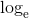
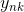

损失函数是表示神经网络性能的“恶劣程度”的指标，即当前的神经网络对监督数据在多大程度上不拟合，在多大程度上不一致。以“性能的恶劣程度”为指标可能会使人感到不太自然，但是如果给损失函数乘上一个负值，就可以解释为“在多大程度上不坏”，即“性能有多好”。并且，“使性能的恶劣程度达到最小”和“使性能的优良程度达到最大”是等价的，不管是用“恶劣程度”还是“优良程度”，做的事情本质上都是一样的。
损失函数是表示神经网络性能的“恶劣程度”的指标，即当前的神经网络对监督数据在多大程度上不拟合，在多大程度上不一致。以“性能的恶劣程度”为指标可能会使人感到不太自然，但是如果给损失函数乘上一个负值，就可以解释为“在多大程度上不坏”，即“性能有多好”。并且，“使性能的恶劣程度达到最小”和“使性能的优良程度达到最大”是等价的，不管是用“恶劣程度”还是“优良程度”，做的事情本质上都是一样的。
如果有人问你现在有多幸福，你会如何回答呢？一般的人可能会给出诸如“还可以吧”或者“不是那么幸福”等笼统的回答。如果有人回答“我现在的幸福指数是 10.23”的话，可能会把人吓一跳吧。因为他用一个数值指标来评判自己的幸福程度。
这里的幸福指数只是打个比方，实际上神经网络的学习也在做同样的事情。神经网络的学习通过某个指标表示现在的状态。然后，以这个指标为基准，寻找最优权重参数。和刚刚那位以幸福指数为指引寻找“最优人生”的人一样，神经网络以某个指标为线索寻找最优权重参数。神经网络的学习中所用的指标称为损失函数（loss function）。这个损失函数可以使用任意函数，但一般用均方误差和交叉熵误差等。
可以用作损失函数的函数有很多，其中最有名的是均方误差（mean squared error）。均方误差如下式所示。
这里， 是表示神经网络的输出，
是表示神经网络的输出， 表示监督数据，k 表示数据的维数。比如，在 3.6 节手写数字识别的例子中，、 是由如下 10 个元素构成的数据。
表示监督数据，k 表示数据的维数。比如，在 3.6 节手写数字识别的例子中，、 是由如下 10 个元素构成的数据。
>>> y = [0.1, 0.05, 0.6, 0.0, 0.05, 0.1, 0.0, 0.1, 0.0, 0.0] >>> t = [0, 0, 1, 0, 0, 0, 0, 0, 0, 0]
数组元素的索引从第一个开始依次对应数字“0”“1”“2”……这里，神经网络的输出 y 是 softmax 函数的输出。由于 softmax 函数的输出可以理解为概率，因此上例表示“0”的概率是 0.1，“1”的概率是 0.05，“2”的概率是 0.6 等。t 是监督数据，将正确解标签设为 1，其他均设为 0。这里，标签“2”为 1，表示正确解是“2”。将正确解标签表示为 1，其他标签表示为 0 的表示方法称为 one-hot 表示。
如式（4.1）所示，均方误差会计算神经网络的输出和正确解监督数据的各个元素之差的平方，再求总和。现在，我们用 Python 来实现这个均方误差，实现方式如下所示。
def mean_squared_error(y, t):
return 0.5 * np.sum((y-t)**2)
这里，参数 y 和 t 是 NumPy 数组。代码实现完全遵照式（4.1），因此不再具体说明。现在，我们使用这个函数，来实际地计算一下。
>>> # 设“2”为正确解 >>> t = [0, 0, 1, 0, 0, 0, 0, 0, 0, 0] >>> >>> # 例1：“2”的概率最高的情况（0.6） >>> y = [0.1, 0.05, 0.6, 0.0, 0.05, 0.1, 0.0, 0.1, 0.0, 0.0] >>> mean_squared_error(np.array(y), np.array(t)) 0.097500000000000031 >>> >>> # 例2：“7”的概率最高的情况（0.6） >>> y = [0.1, 0.05, 0.1, 0.0, 0.05, 0.1, 0.0, 0.6, 0.0, 0.0] >>> mean_squared_error(np.array(y), np.array(t)) 0.59750000000000003
这里举了两个例子。第一个例子中，正确解是“2”，神经网络的输出的最大值是“2”；第二个例子中，正确解是“2”，神经网络的输出的最大值是“7”。如实验结果所示，我们发现第一个例子的损失函数的值更小，和监督数据之间的误差较小。也就是说，均方误差显示第一个例子的输出结果与监督数据更加吻合。
除了均方误差之外，交叉熵误差（cross entropy error）也经常被用作损失函数。交叉熵误差如下式所示。
这里，log 表示以e为底数的自然对数（）。 是神经网络的输出， 是正确解标签。并且， 中只有正确解标签的索引为 1，其他均为 0（one-hot 表示）。因此，式（4.2）实际上只计算对应正确解标签的输出的自然对数。比如，假设正确解标签的索引是“2”，与之对应的神经网络的输出是 0.6，则交叉熵误差是 -log 0.6 = 0.51；若“2”对应的输出是 0.1，则交叉熵误差为 -log 0.1 = 2.30。也就是说，交叉熵误差的值是由正确解标签所对应的输出结果决定的。
自然对数的图像如图 4-3 所示。
图 4-3 自然对数 y = log x 的图像
如图 4-3 所示，x 等于 1 时，y 为 0；随着 x 向 0 靠近，y 逐渐变小。因此，正确解标签对应的输出越大，式（4.2）的值越接近 0；当输出为 1 时，交叉熵误差为 0。此外，如果正确解标签对应的输出较小，则式（4.2）的值较大。
下面，我们来用代码实现交叉熵误差。
def cross_entropy_error(y, t):
delta = 1e-7
return -np.sum(t * np.log(y + delta))
这里，参数 y 和 t 是 NumPy 数组。函数内部在计算 np.log 时，加上了一个微小值 delta。这是因为，当出现 np.log(0) 时，np.log(0) 会变为负无限大的 -inf，这样一来就会导致后续计算无法进行。作为保护性对策，添加一个微小值可以防止负无限大的发生。下面，我们使用 cross_entropy_error(y, t) 进行一些简单的计算。
>>> t = [0, 0, 1, 0, 0, 0, 0, 0, 0, 0] >>> y = [0.1, 0.05, 0.6, 0.0, 0.05, 0.1, 0.0, 0.1, 0.0, 0.0] >>> cross_entropy_error(np.array(y), np.array(t)) 0.51082545709933802 >>> >>> y = [0.1, 0.05, 0.1, 0.0, 0.05, 0.1, 0.0, 0.6, 0.0, 0.0] >>> cross_entropy_error(np.array(y), np.array(t)) 2.3025840929945458
第一个例子中，正确解标签对应的输出为 0.6，此时的交叉熵误差大约为 0.51。第二个例子中，正确解标签对应的输出为 0.1 的低值，此时的交叉熵误差大约为 2.3。由此可以看出，这些结果与我们前面讨论的内容是一致的。
机器学习使用训练数据进行学习。使用训练数据进行学习，严格来说，就是针对训练数据计算损失函数的值，找出使该值尽可能小的参数。因此，计算损失函数时必须将所有的训练数据作为对象。也就是说，如果训练数据有 100 个的话，我们就要把这 100 个损失函数的总和作为学习的指标。
前面介绍的损失函数的例子中考虑的都是针对单个数据的损失函数。如果要求所有训练数据的损失函数的总和，以交叉熵误差为例，可以写成下面的式（4.3）。
这里，假设数据有 N 个， 表示第 n 个数据的第 k 个元素的值（ 是神经网络的输出， 是监督数据）。式子虽然看起来有一些复杂，其实只是把求单个数据的损失函数的式（4.2）扩大到了 N 份数据，不过最后还要除以 N 进行正规化。通过除以 N，可以求单个数据的“平均损失函数”。通过这样的平均化，可以获得和训练数据的数量无关的统一指标。比如，即便训练数据有 1000 个或 10000 个，也可以求得单个数据的平均损失函数。
另外，MNIST 数据集的训练数据有 60000 个，如果以全部数据为对象求损失函数的和，则计算过程需要花费较长的时间。再者，如果遇到大数据，数据量会有几百万、几千万之多，这种情况下以全部数据为对象计算损失函数是不现实的。因此，我们从全部数据中选出一部分，作为全部数据的“近似”。神经网络的学习也是从训练数据中选出一批数据（称为 mini-batch, 小批量），然后对每个 mini-batch 进行学习。比如，从 60000 个训练数据中随机选择 100 笔，再用这 100 笔数据进行学习。这种学习方式称为 mini-batch 学习。
下面我们来编写从训练数据中随机选择指定个数的数据的代码，以进行 mini-batch 学习。在这之前，先来看一下用于读入 MNIST 数据集的代码。
import sys, os
sys.path.append(os.pardir)
import numpy as np
from dataset.mnist import load_mnist
(x_train, t_train), (x_test, t_test) = \
load_mnist(normalize=True, one_hot_label=True)
print(x_train.shape) # (60000, 784)
print(t_train.shape) # (60000, 10)
第 3 章介绍过，load_mnist 函数是用于读入 MNIST 数据集的函数。这个函数在本书提供的脚本 dataset/mnist.py 中，它会读入训练数据和测试数据。读入数据时，通过设定参数 one_hot_label=True，可以得到 one-hot 表示（即仅正确解标签为 1，其余为 0 的数据结构）。
读入上面的 MNIST 数据后，训练数据有 60000 个，输入数据是 784 维（28 × 28）的图像数据，监督数据是 10 维的数据。因此，上面的 x_train、t_train 的形状分别是 (60000, 784) 和 (60000, 10)。
那么，如何从这个训练数据中随机抽取 10 笔数据呢？我们可以使用 NumPy 的 np.random.choice()，写成如下形式。
train_size = x_train.shape[0]
batch_size = 10
batch_mask = np.random.choice(train_size, batch_size)
x_batch = x_train[batch_mask]
t_batch = t_train[batch_mask]
使用 np.random.choice() 可以从指定的数字中随机选择想要的数字。比如，np.random.choice(60000, 10) 会从 0 到 59999 之间随机选择 10 个数字。如下面的实际代码所示，我们可以得到一个包含被选数据的索引的数组。
>>> np.random.choice(60000, 10) array([ 8013, 14666, 58210, 23832, 52091, 10153, 8107, 19410, 27260, 21411])
之后，我们只需指定这些随机选出的索引，取出 mini-batch，然后使用这个 mini-batch 计算损失函数即可。
计算电视收视率时，并不会统计所有家庭的电视机，而是仅以那些被选中的家庭为统计对象。比如，通过从关东地区随机选择 1000 个家庭计算收视率，可以近似地求得关东地区整体的收视率。这 1000 个家庭的收视率，虽然严格上不等于整体的收视率，但可以作为整体的一个近似值。和收视率一样，mini-batch 的损失函数也是利用一部分样本数据来近似地计算整体。也就是说，用随机选择的小批量数据（mini-batch）作为全体训练数据的近似值。
如何实现对应 mini-batch 的交叉熵误差呢？只要改良一下之前实现的对应单个数据的交叉熵误差就可以了。这里，我们来实现一个可以同时处理单个数据和批量数据（数据作为 batch 集中输入）两种情况的函数。
def cross_entropy_error(y, t):
if y.ndim == 1:
t = t.reshape(1, t.size)
y = y.reshape(1, y.size)
batch_size = y.shape[0]
return -np.sum(t * np.log(y + 1e-7)) / batch_size
这里，y 是神经网络的输出，t 是监督数据。y 的维度为 1 时，即求单个数据的交叉熵误差时，需要改变数据的形状。并且，当输入为 mini-batch 时，要用 batch 的个数进行正规化，计算单个数据的平均交叉熵误差。
此外，当监督数据是标签形式（非 one-hot 表示，而是像“2”“7”这样的标签）时，交叉熵误差可通过如下代码实现。
def cross_entropy_error(y, t):
if y.ndim == 1:
t = t.reshape(1, t.size)
y = y.reshape(1, y.size)
batch_size = y.shape[0]
return -np.sum(np.log(y[np.arange(batch_size), t] + 1e-7)) / batch_size
实现的要点是，由于 one-hot 表示中 t 为 0 的元素的交叉熵误差也为 0，因此针对这些元素的计算可以忽略。换言之，如果可以获得神经网络在正确解标签处的输出，就可以计算交叉熵误差。因此，t 为 one-hot 表示时通过 t * np.log(y) 计算的地方，在 t 为标签形式时，可用 np.log( y[np.arange (batch_size), t] ) 实现相同的处理（为了便于观察，这里省略了微小值 1e-7）。
作为参考，简单介绍一下np.log( y[np.arange(batch_size), t] )。np.arange (batch_size) 会生成一个从 0 到 batch_size-1 的数组。比如当 batch_size 为 5 时，np.arange(batch_size) 会生成一个 NumPy 数组 [0, 1, 2, 3, 4]。因为 t 中标签是以 [2, 7, 0, 9, 4] 的形式存储的，所以 y[np.arange(batch_size), t] 能抽出各个数据的正确解标签对应的神经网络的输出（在这个例子中，y[np.arange(batch_size), t] 会生成 NumPy 数组 [y[0,2], y[1,7], y[2,0], y[3,9], y[4,4]]）。
上面我们讨论了损失函数，可能有人要问：“为什么要导入损失函数呢？”以数字识别任务为例，我们想获得的是能提高识别精度的参数，特意再导入一个损失函数不是有些重复劳动吗？也就是说，既然我们的目标是获得使识别精度尽可能高的神经网络，那不是应该把识别精度作为指标吗？
对于这一疑问，我们可以根据“导数”在神经网络学习中的作用来回答。下一节中会详细说到，在神经网络的学习中，寻找最优参数（权重和偏置）时，要寻找使损失函数的值尽可能小的参数。为了找到使损失函数的值尽可能小的地方，需要计算参数的导数（确切地讲是梯度），然后以这个导数为指引，逐步更新参数的值。
假设有一个神经网络，现在我们来关注这个神经网络中的某一个权重参数。此时，对该权重参数的损失函数求导，表示的是“如果稍微改变这个权重参数的值，损失函数的值会如何变化”。如果导数的值为负，通过使该权重参数向正方向改变，可以减小损失函数的值；反过来，如果导数的值为正，则通过使该权重参数向负方向改变，可以减小损失函数的值。不过，当导数的值为 0 时，无论权重参数向哪个方向变化，损失函数的值都不会改变，此时该权重参数的更新会停在此处。
之所以不能用识别精度作为指标，是因为这样一来绝大多数地方的导数都会变为 0，导致参数无法更新。话说得有点多了，我们来总结一下上面的内容。
在进行神经网络的学习时，不能将识别精度作为指标。因为如果以识别精度为指标，则参数的导数在绝大多数地方都会变为 0。
为什么用识别精度作为指标时，参数的导数在绝大多数地方都会变成 0 呢？为了回答这个问题，我们来思考另一个具体例子。假设某个神经网络正确识别出了 100 笔训练数据中的 32 笔，此时识别精度为 32 %。如果以识别精度为指标，即使稍微改变权重参数的值，识别精度也仍将保持在 32 %，不会出现变化。也就是说，仅仅微调参数，是无法改善识别精度的。即便识别精度有所改善，它的值也不会像 32.0123 ... % 这样连续变化，而是变为 33 %、34 % 这样的不连续的、离散的值。而如果把损失函数作为指标，则当前损失函数的值可以表示为 0.92543 ... 这样的值。并且，如果稍微改变一下参数的值，对应的损失函数也会像 0.93432 ... 这样发生连续性的变化。
识别精度对微小的参数变化基本上没有什么反应，即便有反应，它的值也是不连续地、突然地变化。作为激活函数的阶跃函数也有同样的情况。出于相同的原因，如果使用阶跃函数作为激活函数，神经网络的学习将无法进行。如图 4-4 所示，阶跃函数的导数在绝大多数地方（除了 0 以外的地方）均为 0。也就是说，如果使用了阶跃函数，那么即便将损失函数作为指标，参数的微小变化也会被阶跃函数抹杀，导致损失函数的值不会产生任何变化。
阶跃函数就像“竹筒敲石”一样，只在某个瞬间产生变化。而 sigmoid 函数，如图 4-4 所示，不仅函数的输出（竖轴的值）是连续变化的，曲线的斜率（导数）也是连续变化的。也就是说，sigmoid 函数的导数在任何地方都不为 0。这对神经网络的学习非常重要。得益于这个斜率不会为 0 的性质，神经网络的学习得以正确进行。
图 4-4 阶跃函数和 sigmoid 函数：阶跃函数的斜率在绝大多数地方都为 0，而 sigmoid 函数的斜率（切线）不会为 0